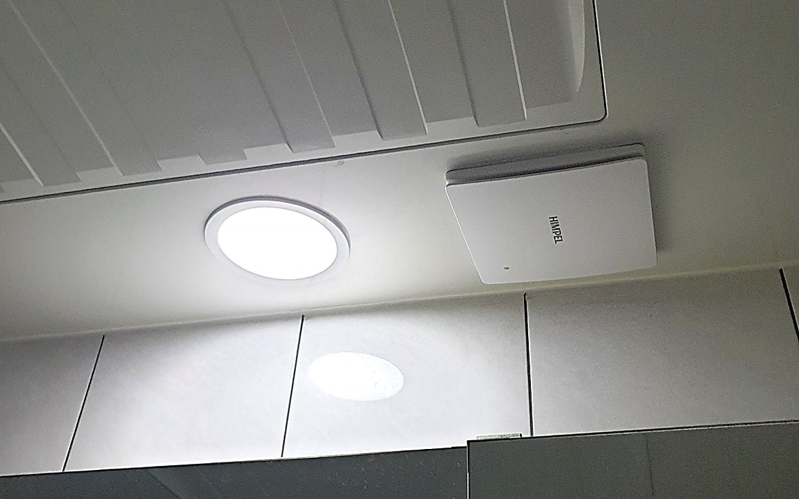
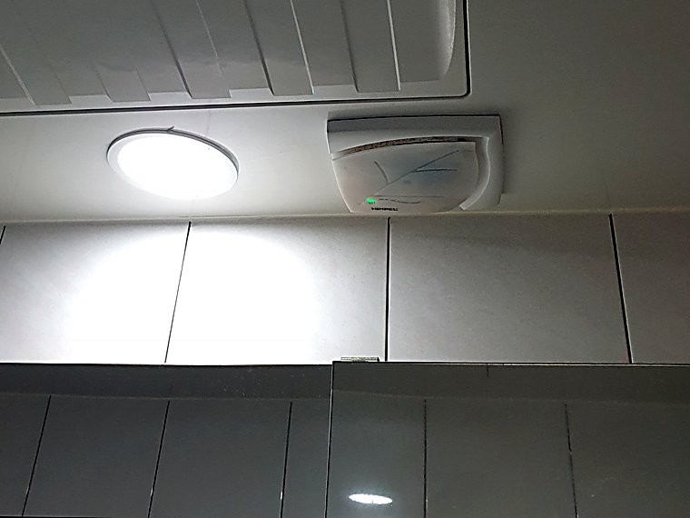
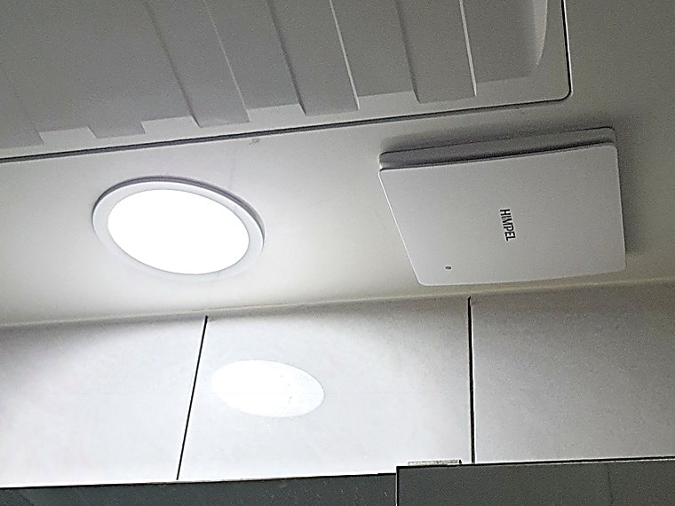
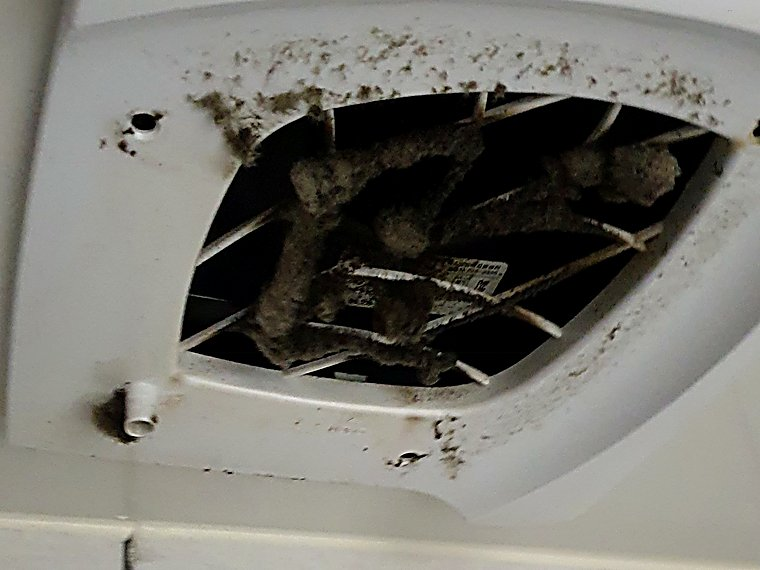
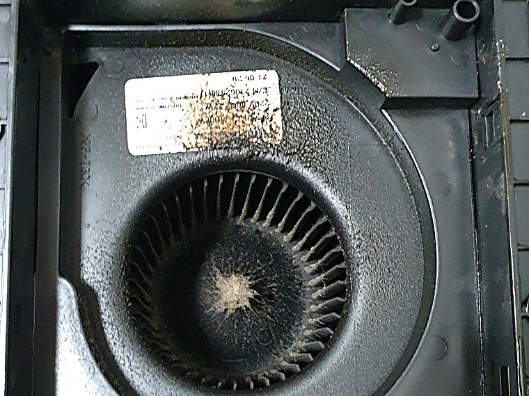
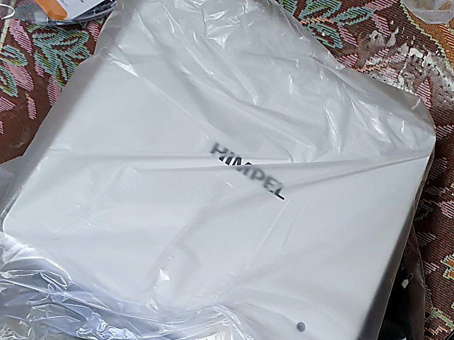
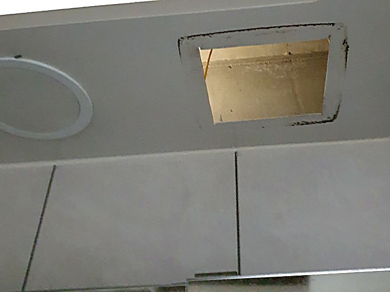
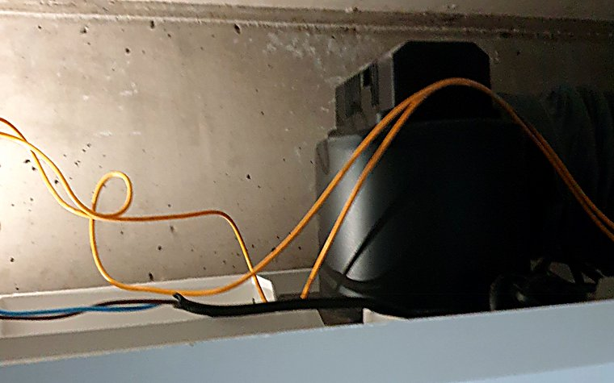
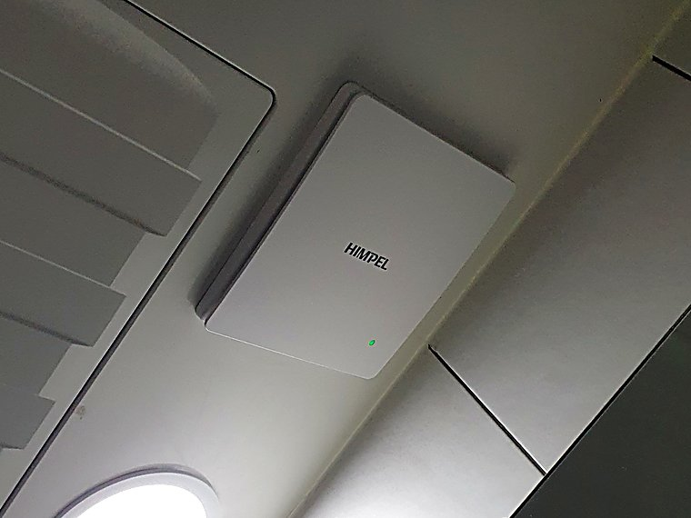

성남 화장실 환풍기 교체 — 소음 크고 안 돌던 욕실 환풍기를 힘펠 신형으로, 1명 1시간
욕실 환풍기가 돌지 않고 소음만 크다면, 안에 먼지가 쌓였거나 제품이 오래된 경우가 대부분입니다. 성남의 이 욕실도 오래된 힘펠 환풍기를 뜯어보니 먼지가 가득했습니다. 같은 자리에 힘펠 신형을 달고 배관과 전기를 다시 연결해, 1명이 1시간 만에 마쳤습니다.
- 현장
- 욕실
- 시공 내용
- 욕실 환풍기 교체 (힘펠 → 힘펠 신형)
- 소요 시간
- 1명 · 1시간
- 지역
- 경기 성남

교체 완료 — 욕실 천장 조명 옆에 들어간 새 환풍기
한눈에 보기
욕실 환풍기가 안 돌고 소음이 클 때
증상 환풍기가 작동하지 않고 소음이 크게 남
원인 오래 쓴 힘펠 환풍기 안에 먼지가 두껍게 쌓임
조치 같은 자리에 힘펠 신형 교체, 배관·전기 재연결 — 성남, 1명 1시간
시공 전 · 후
같은 자리, 같은 크기로 바꿨습니다. 천장을 새로 뚫지 않았습니다.


이렇게 연락이 왔습니다
"화장실 환풍기가 작동이 안 되고, 켜면 소음이 너무 커요." 오래 쓴 힘펠 욕실 환풍기였습니다. 욕실 환풍기는 하루에도 여러 번 켜고 끄는 데다 습기와 먼지를 계속 빨아들이기 때문에, 오래 쓰면 이런 증상이 함께 나타납니다.
소리만 크고 바람이 안 나오는 상태에서는 욕실 습기가 빠지지 않습니다. 거울에 김이 오래 남고, 천장과 줄눈에 곰팡이가 생기기 쉬워집니다.
뜯어보니 먼지가 가득했습니다
커버를 열자 안쪽 망에 먼지가 덩어리째 엉겨 붙어 있었습니다. 본체를 빼서 보니 날개 사이사이에도 먼지가 두껍게 쌓여 있었습니다.
날개에 먼지가 쌓이면 무게 균형이 깨져 돌 때 떨리고 소리가 커집니다. 바람이 지나갈 길도 좁아져 공기를 거의 못 내보냅니다. 여기에 모터까지 오래되면 힘이 떨어져 결국 잘 돌지 않게 됩니다.

커버를 열자 보인 안쪽 망 — 먼지가 덩어리째 붙어 있었습니다

분리한 본체 — 날개 사이사이에 먼지가 두껍게 쌓여 있습니다
청소 대신 교체를 고른 이유
먼지만 문제라면 청소로 나아지기도 합니다. 하지만 이 제품은 오래되어 작동 자체가 불안정했고 소음도 컸습니다. 청소만 하면 잠깐 나아졌다가 금방 같은 증상이 돌아오는 경우가 많아 신형으로 교체하기로 했습니다.
교체 시기가 궁금하시다면 환풍기 교체 시기 — 이 신호가 보이면 바꿀 때입니다에 신호를 정리해 두었습니다.

새로 달 신형 환풍기
배관과 전기까지 꼼꼼하게
환풍기만 바꾸고 배관 연결이 헐거우면 빨아들인 습기가 천장 안에 그대로 퍼집니다. 그래서 본체를 뺀 자리로 천장 안을 확인하고, 새 환풍기 배출구에 배관을 빈틈 없이 다시 연결했습니다.
전선도 새 환풍기에 맞게 연결하고 천장 안에서 늘어지지 않게 정리했습니다. 욕실은 습기가 많은 곳이라 전기 연결을 특히 꼼꼼히 봅니다.

기존 환풍기를 떼어낸 자리 — 이 구멍을 그대로 씁니다

천장 안 — 새 환풍기에 배관과 전선을 연결한 모습
작업 순서
전원 차단 · 기존 환풍기 분리
차단기를 내리고 커버와 본체를 떼어냈습니다. 커버 안쪽 망과 본체 날개에 먼지가 두껍게 엉겨 있었습니다.
천장 안 상태 확인
본체를 뺀 자리로 천장 안을 보고 배관과 전선 상태를 확인했습니다.
배관 연결
새 힘펠 환풍기의 배출구에 기존 배관을 다시 맞춰 빈틈 없이 연결했습니다.
전기 연결 · 정리
전선을 새 환풍기에 연결하고, 천장 안에서 늘어지지 않게 정리했습니다.
본체 고정 · 커버 장착
기존 구멍에 본체를 고정하고 커버를 덮어 마감했습니다.
작동 확인
전원을 넣고 바람이 제대로 빠지는지, 소음이 줄었는지 확인하고 마쳤습니다.
작업 결과
- 작동 정상 — 교체 후 켜 보니 바람이 제대로 빠지고 잘 돌아갑니다.
- 소음 해소 — 먼지 쌓인 오래된 제품을 바꿔 크던 소리가 사라졌습니다.
- 같은 자리 교체 — 기존 천장 구멍을 그대로 써서 천장을 새로 뚫지 않았습니다.
- 배관·전기 재연결 — 배관은 빈틈 없이, 전선은 늘어지지 않게 정리했습니다.
- 성남, 1명 1시간 작업으로 당일 마무리했습니다

교체 후 — 작동 표시등이 켜진 새 환풍기
자주 묻는 질문
욕실 환풍기가 안 돌고 소리만 크면 고장인가요?
대부분 내부에 먼지가 쌓였거나 오래 써서 모터가 약해진 경우입니다. 이 현장도 뜯어보니 날개와 망에 먼지가 두껍게 쌓여 있었고, 제품 자체도 오래돼 교체했습니다.
청소만 하면 다시 괜찮아지지 않나요?
먼지만 문제라면 청소로 나아지기도 합니다. 하지만 오래된 제품이 소음이 크고 작동이 불안정하다면 청소 뒤에도 금방 같은 증상이 돌아옵니다. 그때는 교체가 낫습니다.
같은 자리에 새 환풍기를 달 수 있나요?
네. 천장 구멍과 배관을 그대로 쓰면 벽이나 천장을 새로 뚫지 않아도 됩니다. 이 현장도 기존 자리에 힘펠 신형을 달고 배관과 전선을 다시 연결했습니다.
욕실 환풍기 교체는 얼마나 걸리나요?
같은 자리 교체라면 이 현장 기준 1명이 1시간 정도 걸렸습니다. 배관 상태나 천장 구조에 따라 조금 달라질 수 있습니다.
이런 환풍기도 교체합니다
욕실 환풍기뿐 아니라 집과 상가의 다양한 환풍기를 교체·설치합니다.
욕실·화장실 환풍기 교체
안 돌거나 소음이 큰 천장형·창문형 욕실 환풍기를 같은 자리에서 교체합니다.
주방 환풍기 교체
기름때로 힘이 떨어진 주방 환풍기를 바꾸고 배기 통로까지 함께 봅니다.
주방 레인지후드 교체
냄새가 안 빠지거나 소음이 큰 레인지후드를 새 제품으로 교체합니다.
상가 열기 배출 고압환풍기
식당·매장·PC방처럼 열기와 냄새가 많은 곳에 힘이 센 고압환풍기를 설치합니다.
비슷한 현장의 다른 사례
같은 분류에서 진행한 시공입니다. 현장 조건이 비슷하면 방식도 비슷하게 잡힙니다.